a compilation of tools to improve video editing with blender's VSE.
(Tested with blender 2.74)
Bli bli bli bla bli bla bli bli, Bli bli bli bla http://kinoraw.net bli bla bli bli, Bli bli bli FLOSS video editing bla bli bla bli bli, Bli bli bli BLENDER! bla bli bla bli bli, Bli bli bli bla Jump to Cut bli bla bli bli, Bli bli bli Extra Sequencer Actions bla bli bla bli bli, Bli bli bli bla bli bla bli bli, Bli bli bli FCP XDXDXDXD bla bli bla bli bli, Bli bli useful tools grouped in the same panel bli bla bli bla bli bli, Bli bli bli bla bli bla bli bli. Bli bla bla bli fast video editing bli, bli bli with Blender bli bla linux, of course. Bli bla bli bli blau
-- Carlos Padial, 2015 ;)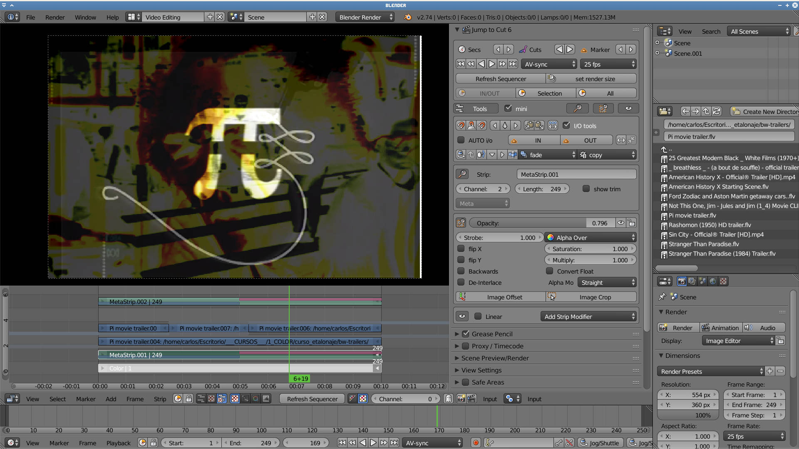
The source in this repo is a development version and maybe unstable. To get the most stable version follow this instructions:
Download the zip file from this page https://github.com/kinoraw/kinoraw_repo and extract it somewhere.
Once in Blender, open the user preferences window (ctrl+alt+u) and load the zip file named kinoraw_tools_Vxxx.zip with the button 'install from file' you can find at the bottom of the window.
After that, you should activate the addon by presing the checkbox next to the addon
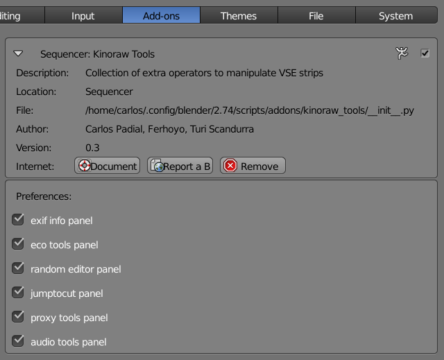
Every panel can be switched visible/invisible in the addon preferences panel.You can clone the addon directly in the blender addons folder, i.e: in my ubuntu computer i had to do:
cd ~/.config/blender/2.74/scripts/addons
git clone https://github.com/kinoraw/kinoraw_toolsthen you can start blender and activate the addon in the user preferences window.
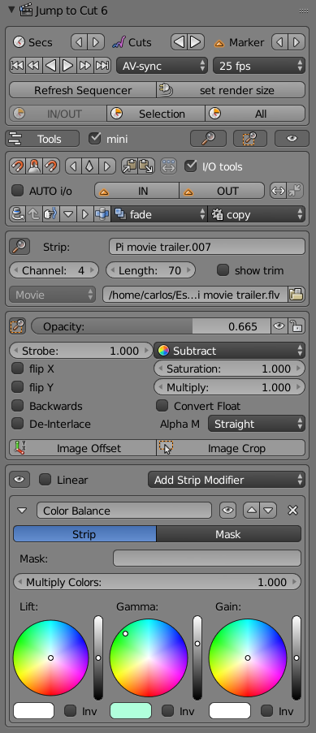
Table of Contents
Jump to Cut has been there for a while (in October will fulfill five years!) and it's still running to help you keep important things together when editing video with blender.
Since version 2.73 there is an option to jump to edit points, so Jump to Cut's original feature has been integrated into Blender code !! =)
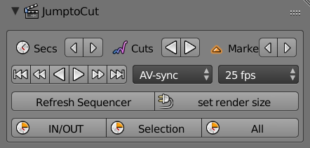
Skip through the Timeline by one-second increments. The number of frames to skip is based on render settings for current scene. The script enables two new key bindings:
The timeline cursor jumps from edit point to edit point. Edit point is any point of entry or departure of a clip, or the cutting start and end.
(it is assigned by default to PgUp and PgDown)
This buttons are shortcuts for the new internal operator (added recently in Gooseberry project)
As you can guess, jump from marker to marker.
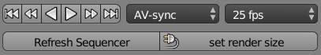
This are self explanatory, some useful internal operators...
Set start and end frames of current scene according to In and Out markers.
Set start and end frames of current scene to match selected strips in the Sequence Editor.
It also centers the view into the selection
Set start and end frames of current scene according to the content of the Sequence Editor.
It also centers the view into the selection
Many of the following operators are from the addon Extra Sequencer Actions made in 2012 by Turi Scandurra
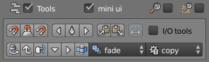
Bli bli bli mini UI bla bli bla bli bli, full size buttons Bli bli bli bla bli bla bli bli
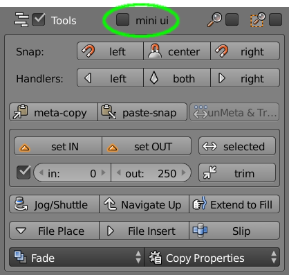
Bli bli bli bla bli bla bli bli, in/out tools Bli bli bli bla bli bla invasive features bli bli Bli bli bli bla bli bla bli, bli bli bli bla bli deactivated by default bla bli. Bli bli bli bla bli bla bli
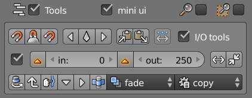

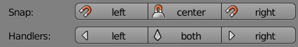
This are self explanatory, otherwise you can test and see what happens...
This are self explanatory, otherwise you can test and see what happens...
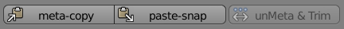
This operator makes a metastrip with all selected items, and trim them to in and out.
If there is no IN and OUT markers, the meta is not trimmed.
Paste the clipboard content starting at the timeline cursor.
The selected meta is ungrouped and all related strips outside in and out range are trimmed.
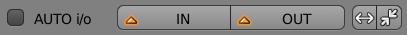
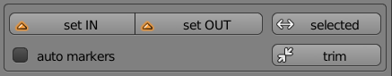
Create a marker IN and a marker OUT where the timeline cursor are. Two specific markers that can then be used for editing.
Create a marker IN at the selected strip start frame and a marker OUT at the selected strip end frame.
Trim (soft cut) the selected clip on both sides to adhere to the In and Out markers, as long as the clip is within that range. If not, or in absence of In and Out, does nothing. I.E. It is a quick option to cut many clips at the same duration.
Bli bli bla bla

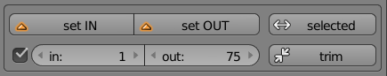
If automarkers is selected, each scene stores his owns IN and OUT markers and you can move it only with this tools...
You can access this in and out markers with this:
bpy.data.scenes['Scene'].kr_in_marker
bpy.data.scenes['Scene'].kr_out_marker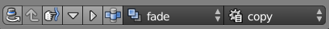
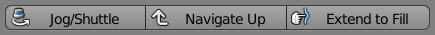
Jog through current sequence, looping between start and end frames. This action is known as jogging, shuttling or scrubbing. Click the operator to enter interactive mode. Move mouse cursor along X axis to jog. To exit, click left or right mouse button or hit ESC.
Move current view to parent timeline. Only enabled when current view is relative to a Meta strip. This operator does not perform any modification to timeline elements.
Extend active strip forward to fill adjacent space. If there no other strip is following active one on the same channel, the clip is extended to the end of the sequence.
Place active file from File Browser to Sequencer Editor on current frame.
Same as above, but also move forward all strips after current frame.
Alter in and out points of a strip but not its duration. Only available when a the type of active strip is Movie, Scene or Meta. Click 'Input...' to choose the amount of sliding desired. The start and end frame of active strip will be moved, but its length and position will remain unchanged.
Interactive mode. Move mouse cursor along X axis to jog. To exit, click left or right mouse button or hit ESC.
This button is shortcut for the new internal operator (added recently in Gooseberry project)
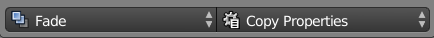
Fade opacity of active strip, or its volume if its type is Sound, creating keyframes for the corresponding property. Possible fade directions are In, Out, In and Out. Duration defines the number of frames between the start and the end of the fade. Amount defines the maximum value that the fade will set. For opacity fades, the maximum value is 1.0. The minimum value reached by the fade is always 0. Keyframes created with this operator can be manipulated through the F-Curve Editor.
Copy properties of active strip to selected strips. Start selecting multiple strips, then make active the strip whose properties need to be copied to the selected strips. Click the desired operator to perform the action. Some operators affect single properties, while some others affect a group of properties.
Bli bli bli bla bli bla bli bli, accesible data from selected strip Bli bli bli bla bli bla bli bli
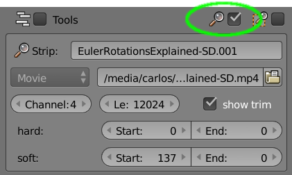
Bli bli bli trim information bla bli bla bli bli, soft & hard Bli bli bli bla bli bla bli bli
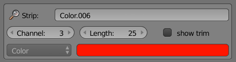
bla bli bla bli bli, all strip types Bli bli bli bla bli bla bli bli blau

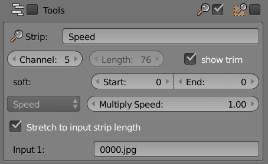
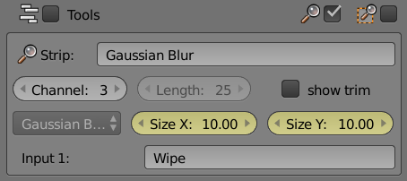
If you have VSE Quick Functions addon enabled, then you can also see some info in the panel
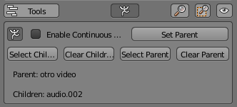
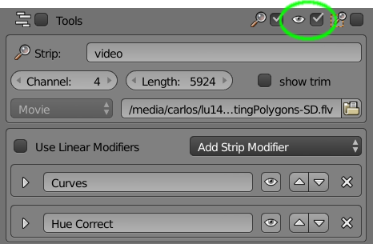
bla bli bla bli bli, same menus, less space Bli bli bli bla bli bla bli bli blau
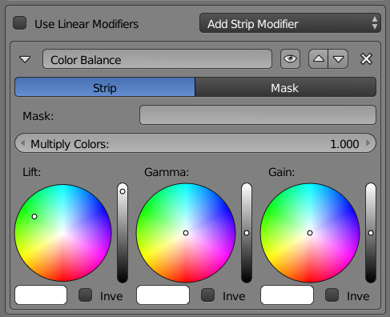
If you have copy modifiers addon enabled, then you can also access to their functions from here

Bli bli bli bla bli bla bli bli, secondary properties Bli bli bli bla bli bla bli bli
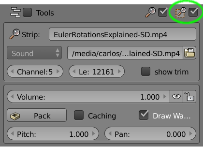
Bli bli bli bla bli bla bli bli, geometry properties Bli bli bli bla bli bla bli bli
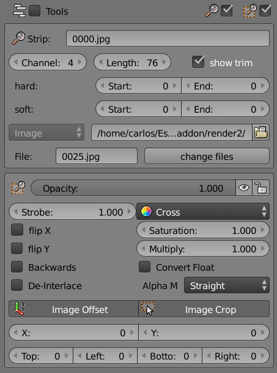
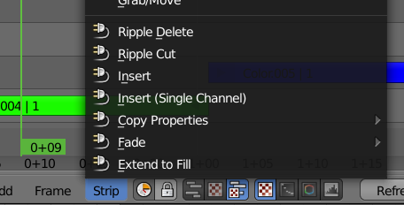
Delete the active strip and shift back all other strips the number of frames between the beginning of deleted strip and the next edit in the sequence.
Same as above, but copying active strip to memory buffer before deleting it. Copied strip can be pasted in place as usual, for example using the keystroke combination ctrl-V.
Shift forward all strips after current frame and insert active strip.
Same as above, but shifting occurs only on the same channel as active strip.
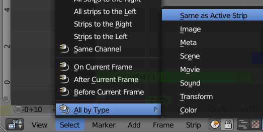
Select all the strips of the specified type in the Sequence Editor.
Select strips on all channels according to current frame. Available modes are:
Select strips on the same channel as selected
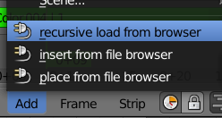
In a File Browser area, select a file and in the VSE panel press "Import from Browser" button. All movie clips will be imported (sorted alphabeticaly by filename) in the VSE
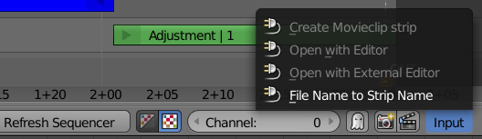
Open active strip with Movie Clip Editor or Image Editor, according to strip type. If a clip is already loaded, existing data is used.
Open active image strip with the default external image editor. To use this operator a valid path to the external editor must be specified in User Preferences > File.
When a movie or image strip is selected, this operator creates a movieclip or find the correspondent movieclip that already exists for this footage, and add a VSE strip with same cuts the original strip has.It can convert movie strips and image sequences, both with hard cuts or soft cuts.
Set strip name to input file name. This operator is useful after separating images of a sequence.

Bli bla bli bla bla
Bli bla bli bli blau
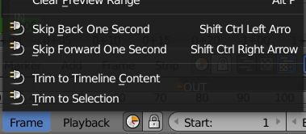
Skip through the Timeline by one-second increments. The number of frames to skip is based on render settings for current scene. The script enables two new key bindings:
Set start and end frames of current scene to match selected strips in the Sequence Editor.
It also centers the view into the selection
Set start and end frames of current scene according to the content of the Sequence Editor.
It also centers the view into the selection
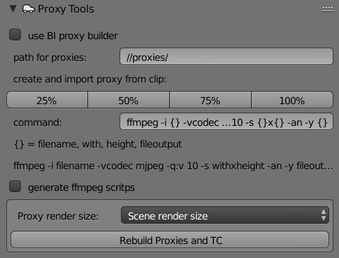
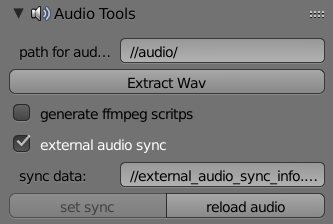
create a wav file out of a selected movie strip in the indicated path.
If the audio file already exists in the path, it is loaded and trimmed according to the selected movie strip.
You can also generate ffmpeg scripts to launch a batch conversion out of blender.
This is useful to sync diferent audio strips to a single movie strip. It does not mantain the sync if you move only the movie strip, but anytime you can delete audio strips and reload again synced.
Select an audio strip and a movie strip and press set sync to store sync information in a text file.
Press reload audio with a movie strip selected to reload the audio files
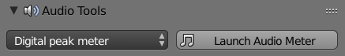
To use this you need to install Jack and JACK Meterbridge. Select the meter type and press Launch audio meter
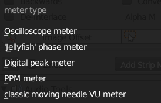
The operator launch the meterbridge app and connect it to pulseaudio jack sink. If it doesn work for your system, try to open Qjackctl and connect manually.
If you install pulseaudio along with jack, you don't need to compile Blender with jack enabled to use this feature.
For now it only works for linux but windows or osx can be implemented (need some testers for this...)
More info about available meters: http://plugin.org.uk/meterbridge/
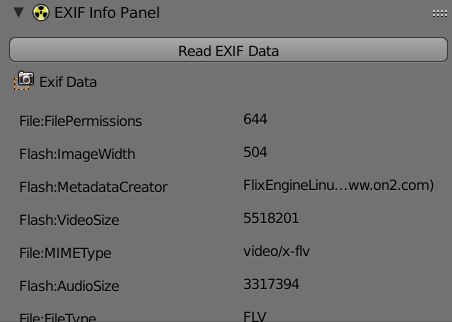
Select a strip and press 'Read EXIF data'. Works only with image and movie strips
to get exif info panel you need to install exiftools:
sudo apt-get install libimage-exiftool-perl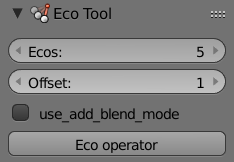
TODO: keep metastrip in the same channel
Only visible with a Metastrip selected
Select a movie or meta strip, set number of echoes and offset (in frames), and press Eco button.
The opacity of all strips is updated to 1/number of echoes to mantain luminance. The blending is set to alpha over for all clips except first one.
If add mode is selected, the blending is set to add.
All clips are finally grouped inside a meta. Press home after running the script to see the meta.
Only visible with a Metastrip selected
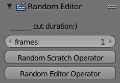
Given IN and OUT points, a duration in frames, and a Meta as source, the operator populates the in and out range with random cuts from source, all with the same duration
Not working yet!

for the moment it has only glitch algorithm, you need to install aviglitch
more info here:
http://ucnv.github.io/aviglitch/
cc-by: Carlos Padial, 2015